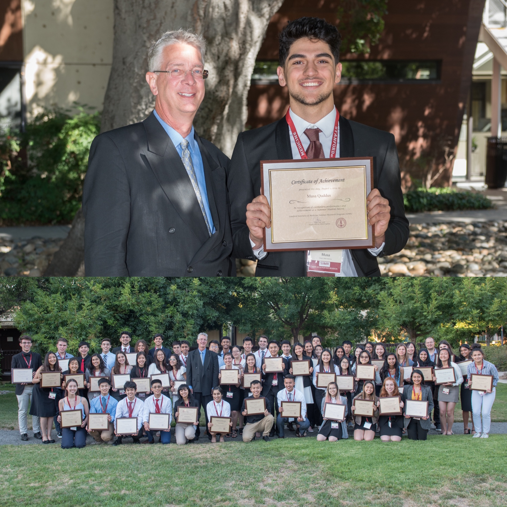
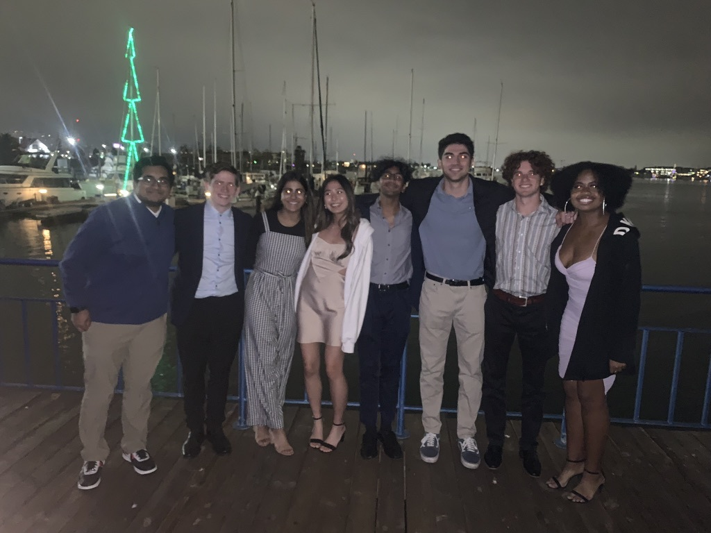

Work
Completed C.S. projects
Cryptographic File Sharing: engineered a client application for secure file sharing using cryptography through Golang
Machine Learning: developed neural network structure to classify images of numbers as set digits through machine learning
Orbit: programmed hacking exploits on memory vulnerabilities (stack smashing, overflows, etc.) on x86 architecture for cybersecurity
61CPU: implemented Logisim to develop logic circuits of machine architecture of a CPU, including an ALU, caches, and registers
EECS16A: utilized circuitry, software engineering, and linear algebra to develop a basic camera, touchscreen, and GPS system
Jump61: developed a game-tree algorithm with alpha-beta pruning to create a version of KJumpingCube with runtime complexity constraints
Gitlet: utilized hashing, serialization, file manipulation and persistence in order to develop a version-control system similar to Git
Commscope
As a software engineer intern, I worked with a team that was responsible for the developmenent and testing of a complex application that provided modified video streaming manifests for clients such as cable companies.
My job was to create Project oX, a program that automated the entirety of the testing process, fromt the creation of the testing environment, execution of test cases, logging/notification of test results, and destruction of the environment.
My job was to create Project oX, a program that automated the entirety of the testing process, fromt the creation of the testing environment, execution of test cases, logging/notification of test results, and destruction of the environment.
Tech stack: Linux/Ubuntu, centOS, VMWare, REST API, Ansible, SSH, Terraform, Bash, Python, XML, Cron, JSON, Linux VS
Stanford Institute of Medical Research

Participating in the bioengineering division of Stanford Medicine's SIMR internship, my team and I utilized the biodesign process to develop a prototype for a current medical issue.
Using CAD modeling, microcontroller processing, and circuitry, our team developed CHAD, or the Comprehensive HIV and Aids Diagnosis. This prototype provided an interface for an over-the-counter HIV test kit in order to prevent user error due to language barriers and other possible missteps.
Aside from the prototype development, SIMR provided a multitude of other opportunities, such as networking with alumni and providing lectures from renowned scientists. My favorite lecture was from Brian Kobilka, a Nobel laureate responsible for our understanding in G-coupled protein receptors.
Berkeley Business Society

Berkeley Business Society is a consulting club dedicated to provided strategic solutions to inqueries from dozens of big-name companies.
My work at BBS involved positions such as External VP, senior tech consultant for Microsoft, and junior consultant for Airbnb.
The photo above shows my division celebrating a successful final deliverable for Airbnb.